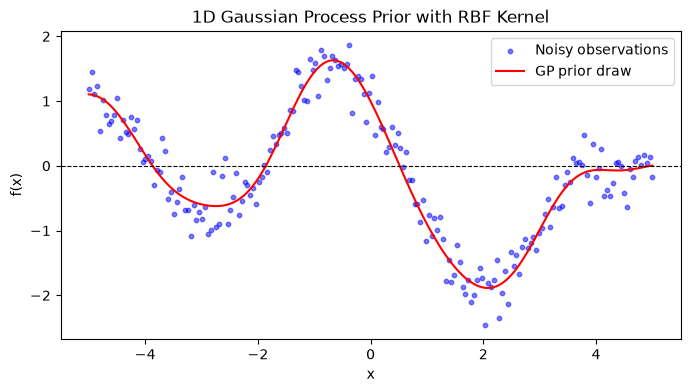

This week we will continue the linear regression challenge. Check in Lab 1 instructions for what you should aim at accomplishing by the end of the lab.
This presentation’s goal is introducing a technique you may use to handle the non-linear features, which is important to know for more realistic scenarios.
This challenge is unusually unrealistic in that one may correctly guess a closed form expression for the non-linear features, as some of you did.
Although you could in principle get zero error without using splines, we recommend experimenting with splines since they provide a more realistic handle to work on real problems.
1 Intractable targets
Imagine you are given data from the function below, which has no closed-form expression.
import numpy as npimport matplotlib.pyplot as plt# Input locationsx = np.linspace(-5, 5, 200)# RBF kernellength_scale =1.0variance =1.0X1, X2 = np.meshgrid(x, x)K = variance * np.exp(-0.5* ((X1 - X2) / length_scale) **2)# Draw one sample from the GP priorrng = np.random.default_rng(42)f_sample = rng.multivariate_normal( mean=np.zeros(len(x)), cov=K +1e-8* np.eye(len(x)))y = f_sample +0.25* rng.normal(size=len(x)) # Add some noise# Plot the drawplt.figure(figsize=(8, 4))plt.scatter(x, y, label="Noisy observations", s=10, color="blue", alpha=0.5)plt.plot(x, f_sample, label="GP prior draw", c="red")plt.axhline(0, color="black", linewidth=0.8, linestyle="--")plt.xlabel("x")plt.ylabel("f(x)")plt.title("1D Gaussian Process Prior with RBF Kernel")plt.legend()plt.show()

Assuming you do not know what a Gaussian process is, how could you try to use linear regression to approximate this function?
One natural follow-up from the idea of adding non-linear features, is just trying to add a bunch of them and hoping that some linear combination of them approximates well the ground-truth function. Possibilities are, say, adding in polynomials of all degrees up to some high-degree, or using trigonometric polynomials with increasing frequencies.
Given unlimited resources, both strategies could in principle work, but they have some short comings for realistic problems. Can you think of some of them?
There is a wide zoo of recommended choices of flexible basis for expressing large functions classes as linear models. We will focus on one particular choice called splines, which balances well issues that might arise from using such expressive basis of features.
2 Splines
As you probably saw in class, one possible way of trying to approximate an arbitrary regression function using linear regression, is by defining the following set of features:
\[
\phi_k(x) = I(x \in (t_k,t_{k+1}]),
\]
where \(t_k < t_{k+1}\) is a fine partition of the domain where \(x\) lives. If we fit linear regression with this basis, we will obtain a piecewise constant function as seen below.
This provides a reasonably flexible approximation of our regression function. We can further generalize this idea, and instead of fitting a constant per interval, we can fit one polynomial per interval, say of some arbitrary degree.
One drawback from such approaches is that the number of parameters increases rather fast, and we are refraining from using certain assumptions from the regression function that seem reasonable here: that it’s probably smooth. Splines are essentially a way of fixing this.
We fit local polynomials with the additional restriction that at the joints between the intervals the fitted polynomials in the intervals have the same derivative up to highest degree minus one, where we consider the zeroth derivative as the value of the function itself. So for example, a piecewise linear function continuous at the joints of the intervals count as a degree 1 spline (as we will see below).
There are more than one way of achieving this, we will use B-splines, which are recursively defined via (see this):
Ground-truth function MSE: 0.0602
Piecewise-constant MSE: 0.1126
Degree-1 spline MSE: 0.0739
Cubic spline MSE: 0.0691
Mean prediction MSE: 1.1366
Although there are some small mismatches relative to the ground-truth function, one can see that they are small, and we ended up being able to recover the overall shape from the data without having to guess. The MSE obtained from the last two spline basis is very close from the one obtained using the ground-truth function. For most practical circumstances this difference is negligible.
If one is primarily interested in doing prediction and getting a low MSE, the splines on this case are as good as the ground-truth function. A similar reasoning holds for the lab. Although in principle one could get zero error, for prediction purposes, one can get a near zero score using splines, with a lower effort.
It’s good to keep in mind that for situations in which inference is relevant, or if you want to reverse engineer the exact function in case that is possible, techniques other than splines may be more suitable.